道具中心
道具中心为站点提供丰富多彩的娱乐功能，可以有效的增强站点会员的活跃性，同时通过购买道具消费积分，可以激发会员发帖、帮助其它会员得到悬赏积分等，提升站点的互相性和活跃度。
如果要让会员在站点中使用道具，需要在 后台 => 运营 => 道具中心 中，选择打开道具中心及设置道具回收价格折扣。
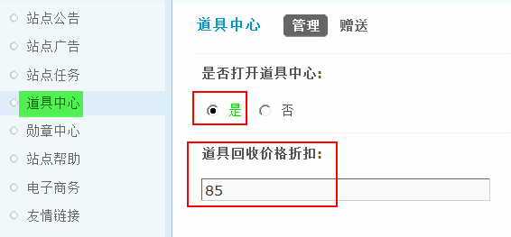系统内置了 24 种道具，如果要额外添加其他道具，需要将道具脚本程序上传到 source/class/magic/ 目录，这样新的道具就会出现在道具列表中，并在站点中使用了。
一、道具的作用
每个道具的作用如下：
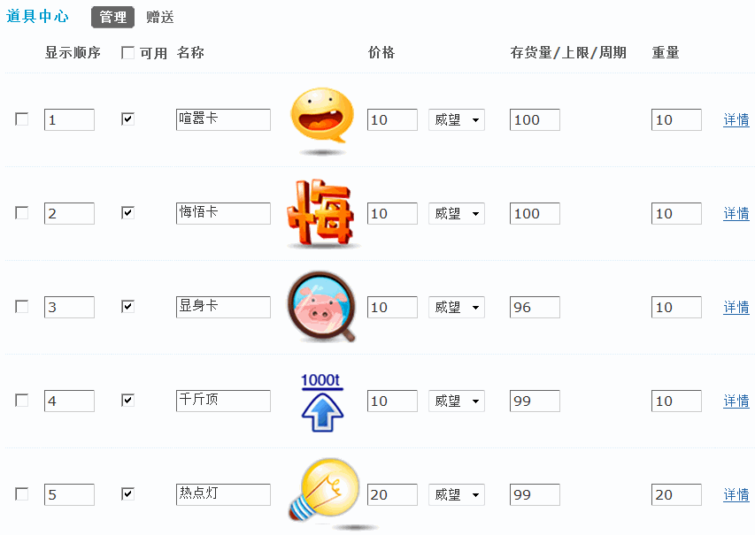喧嚣卡：可以将主题开启，可以回复。
悔悟卡：可以删除自己的帖子。
显身卡：可以将指定的匿名贴显身。
千斤顶：可以将主题顶起一段时间，重复使用可延长帖子被顶起的时间。
热点灯：把自己的日志热度增加站点推荐的热点值。
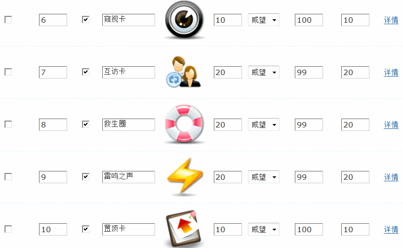窥视卡：可以查看指定用户的 IP。
互访卡：随机访问好友空间/向好友打招呼/给好友留言。
救生圈：把自己日志的发布时间更新为当前时间。
雷鸣之声：发布一条全站动态，通知大家自己上线了。
置顶卡：可以将主题置顶。
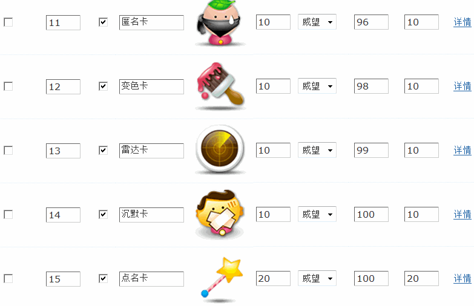匿名卡：可以将自己的帖子匿名，隐藏身份。
变色卡：可以将主题高亮，变更颜色。
雷达卡：查看某个用户是否在线。
沉默卡：可以将主题关闭，禁止回复。
点名卡：发通知给自己的好友，让他们来查看自己的日志。
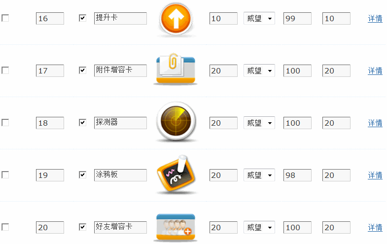提升卡：可以提升某个主题。
附件增容卡：增加附件容量上限。
探测器：探测埋了红包的会员空间。
涂鸦板：在日志、帖子中使用涂鸦板。
好友增容卡：增加好友容量上限。
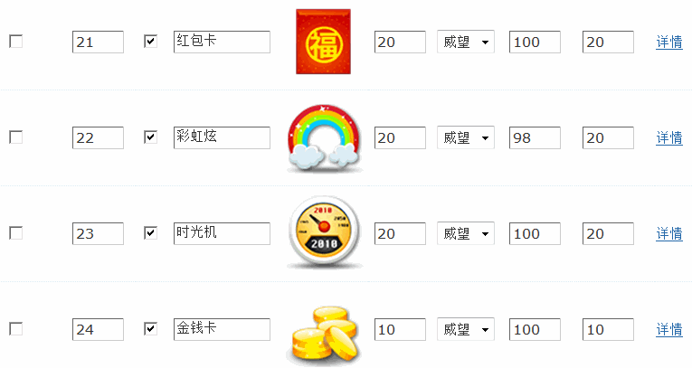红包卡：将自己的一部分积分埋在空间，来访者可以点击获取。
彩虹炫：在日志、相册评论中使用彩虹炫。
时光机：把自己日志的发布时间修改为过去。
金钱卡：可以随机获得特定积分。
二、编辑道具
在每个道具后点击“详情”，可对道具的名称、使用积分、价格、存货量、存货量上限、重量、补货周期、使用周期和数目、道具描述、允许使用道具的版块及允许使用的用户组等属性进行编辑。
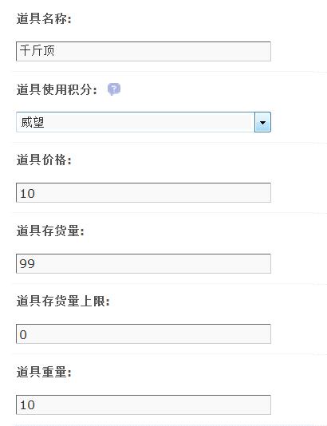道具名称：该道具的显示名称，可以对现有名称进行修改。
道具使用积分：可以选择站点内已经开启的扩展积分如金钱、威望等。
道具价格：指单次购买道具的价格。
道具库存量：总共有多少个道具可以被购买。
道具存货量上限：设置道具补货的上限，每周期将道具补货至该上限
道具重量：每个道具的重量值。
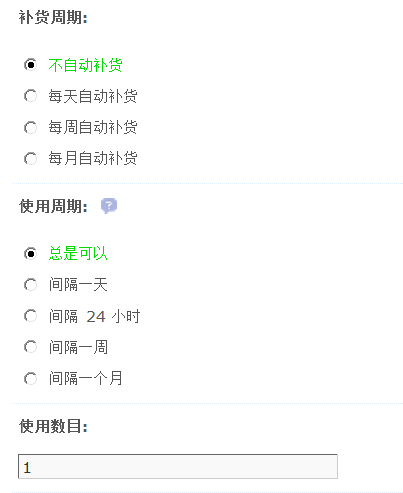补货周期：设置道具自动补货的周期，包括每天/每周/每月自动补货。
使用周期：设定用户使用此道具的使用周期。
使用数目：设定用户在使用周期内最多能使用此道具的个数。
道具描述：简单介绍该道具的用途。
允许使用本道具的版块：选择可以使用本道具的片块，按住Ctrl可以多选。
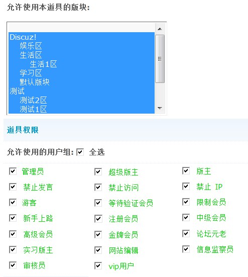允许使用本道具的版块：选择可以使用本道具的版块，按住Ctrl可以多选。
允许使用的用户组：选择允许使用道具的用户组。
三、管理道具
在道具管理页面，可以删除道具、关闭/启用道具、修改道具名称、快速设置的价格、使用积分、库存量和重量。
是否打开道具中心：选择“否”所有道具都将不可使用。
道具回收价格折扣：设置道具系统回收价格折扣，此值为百分比，例如如果此值为 85, 则系统将以道具原价 85% 的价格回收，建议不超过 100，有效防止刷积分。留空或者 0 表示不开启道具回收功能。
四、赠送
管理员可以直接在后台，批量赠送道具给某些特定的会员。
1、选取目标用户
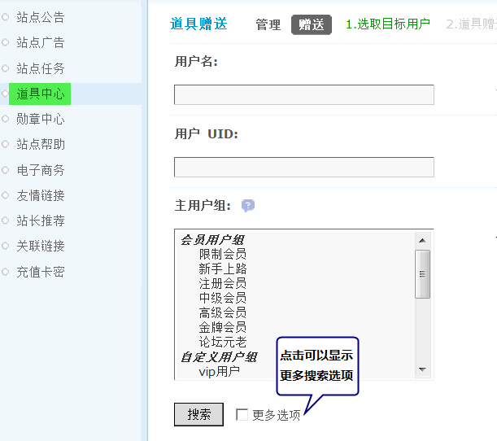输入要赠送的用户名、用户UID、以及主用户组，点击搜索及可搜索到所有符合条件的会员。
然后选择具体要赠送的道具即可。
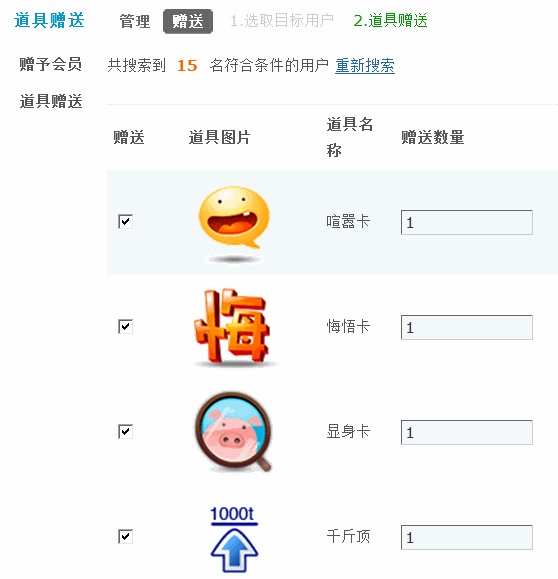勾选“发送赠送道具通知”后，将会给被赠予的会员发送通知。
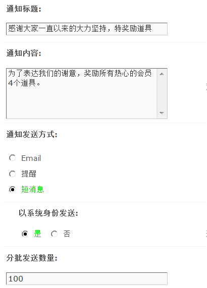当会员登录站点后，将会收到短消息。
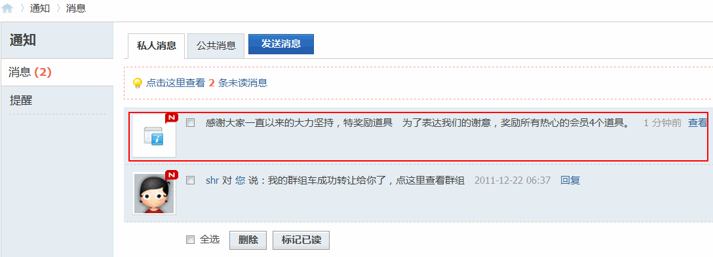会员的获赠记录里将会显示被赠送的道具。
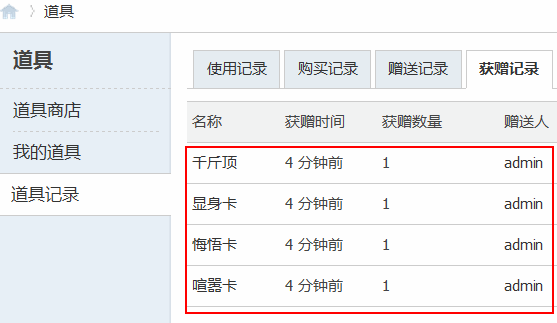同时被赠送的道具可以正常使用了。